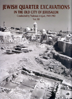

Hillel Geva
Jewish Quarter Excavations in the Old City Jerusalem Volume III: Area E and Other Studies, Final Report. I
Israel Exploration Society: Jerusalem.
 Copies may be orderedby contacting: The Israel Exploration Society P. O. Box 7041, 5 Avida Street, Jerusalem 91070 Israel. Fax: 972-2-6-247772 Phone: 972-2-6-257991 E-mail: ies@vms.huji.ac.il |
This is the third volume on the results of the excavations directed by the late Professor Nahman Avigad in the years 1969-1982 at the Jewish Quarter of the Old City of Jerusalem. The first two volumes on these excavations (Jewish Quarter I, II) dealt with Areas A, W and X-2, the prominent remains of which are First and Second Temple period fortifications located on the northern side of the Southwestern Hill. These volumes also included studies on all the First Temple period seal impressions and imported Greek stamped amphora handles from the Hellenistic period found throughout the Jewish Quarter excavation areas. The present volume focuses on the findings from Area E, located in the center of the Jewish Quarter. The area yielded finds from six occupational strata ranging from the Iron Age II to the Late Roman and Byzantine periods. The most significant of these are the strata from the late Second Temple period, specifically the second half of the 1st century BCE. Prominent architectural remains from this period are a group of well-preserved structures, which contained a variety of finds (Stratum 3), put into disuse and sealed by the massive stone pavement of a street (Stratum 2). The importance of the finds contained within the structures lies in the fact that they were deposited in a clear stratigraphical context that can be well dated to a brief and defined period of time during the reign of Herod the Great. The remains from the Second Temple period can contribute much to the understanding of the nature and chronology of the establishment of the wealthy residential quarter of the Upper City, and to the classification of pottery and stone vessel forms, as well as other finds, in use in Jerusalem during Herod's reign. Part One of this report includes seventeen chapters. The first chapter describes the architectural remains uncovered in Area E, presented according to stratum. The second chapter discusses uniquely shaped stone basins of the Second Temple period used for washing feet before descent into miqwa'ot for immersion; two of these basins were found in Area E, one in situ. The other chapters in Part One present the variety of small finds found in different strata of Area E. An index of the Area E finds is brought at the end of Part One. Part Two of the report contains five chapters dealing with several types of small finds from the Second Temple period uncovered in excavation areas throughout the Jewish Quarter: stone scale weights, Hebrew and Aramaic ostraca, and the refuse of a glass workshop. Also appearing in the second part are supplementary studies on various finds from the excavations. Our plan is to continue in the coming years with the publication of the principal findings from the Jewish Quarter excavations. The fourth volume, which is being prepared by Oren Gutfeld, will deal with the findings from Areas X (the Byzantine Cardo) and T (the Nea Church). The fifth volume will be devoted to the findings from Area B (the Burnt House). To be published subsequently are the remains of the elaborate dwellings of the wealthy residential quarter-the Upper City of the late Second Temple period (also referred to as the Herodian Quarter)-uncovered in Areas F, M, and P of the Jewish Quarter. The present volume could not have been effectively realized without the assistance of numerous scholars, from research institutions both in Israel and abroad. They are appreciated for offering their time, knowledge and expertise on behalf of the publication of the wealth of finds unearthed in Area E and in other areas of the Jewish Quarter. Some of these scholars had already taken part in the study of Jewish Quarter finds published in the previous two volumes. Our thanks go to all of them for their invaluable contribution, and we hope that our rewarding partnership with them will continue in the future. We would like to express our thanks and appreciation to the foundations that supported the publication of this volume: The Donna and Marvin Schwartz Foundation, The Dorot Foundation, The Reuben and Edith Hecht Trust, and George Blumenthal and the Center for Online Judaic Studies. The research and the editing of the chapters on the Hebrew and Aramaic ostraca were supported by The David and Jemima Jeselsohn Epigraphic Center of Jewish History at Bar-Ilan University. We are also grateful to all who participated in the excavation and in the processing of the finds and the publication of this volume. Our thanks go to the Israel Exploration Society and its director, Joseph Aviram, for his encouragement and efforts in pushing the publication of the Jewish Quarter excavations forward, and his help in obtaining necessary financial support for the publication of previous volumes and the present volume; to the Institute of Archaeology at the Hebrew University of Jerusalem on Mt. Scopus, where the Jewish Quarter excavation's finds are stored and where their processing and study takes place, and whose laboratories were of great assistance in the preparation of finds for publication; and to the Israel Antiquities Authority (the Department of Antiquities and Museums at the time of the excavation), a trusted partner during the excavation, and in whose laboratories the pottery vessels were restored and the metal vessels were treated at the conclusion of the excavation. We offer special thanks to those who have assisted over the years in bringing this volume to fruition in accord with the high standards set for the publication. Ben Gordon worked diligently on the translation of some chapters of the book to English, and on the final editing of the book, seeing it through to its final publication. Alan Paris and Shelly Sadeh translated and edited several of the chapters. Alan Paris also offered helpful advice in preparing the manuscript for publication. Gabi Laron took the color photographs of the finds. Oren Gutfeld assisted in preparing the stratigraphy chapter. Ravit Nenner-Soriano worked meticulously and devotedly on the registration of the finds and the production of publication-ready plates. We extend our thanks also to all those who have participated, over the years since the close of the excavations, in the drawing and photographing of the finds and in their preparation for publication (a full list of these individuals appears in Chapter One, this volume). Also deserving of mention for their tireless efforts are Arieh Marzel, who typeset the manuscript, and Avraham Pladot of the Old City Press, who harnessed his talent and expertise for the sake of the book, preparing its illustrations and page layout, supervising its printing, and essentially seeing the book through to the final form laid before you. |
| Back to Publications | Table of Contents |